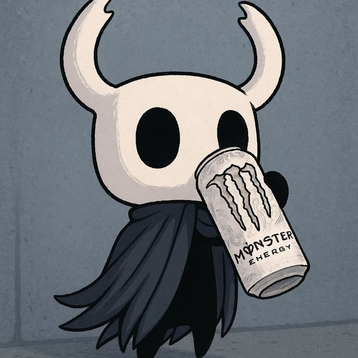

Estudiante SENA · Explorando el código · Construyendo el futuro

Apasionado por crear, aprender y dar vida a ideas a través del desarrollo.
Soy Walter, estudiante de Análisis y Desarrollo de Software en el SENA, actualmente en etapa electiva. Me gusta convertir ideas en código y aprender algo nuevo cada día.
Disfruto tanto el frontend como el backend. Creo en escribir código limpio, funcional y con propósito. Cada proyecto es una oportunidad para mejorar.
Explorando nuevas tecnologías, construyendo proyectos personales y preparándome para dar el siguiente paso en el mundo del desarrollo.
Maquetar interfaces, dar estilo y construir experiencias visuales con HTML, CSS y JavaScript.
Lógica del lado del servidor, manejo de datos y construcción de APIs con Python y SQL.
Scripts, automatización, consultas y manejo de bases de datos relacionales.
Control de versiones, trabajo colaborativo y administración de repositorios en GitHub.
¿Quieres ver más de mi trabajo o colaborar en algo?